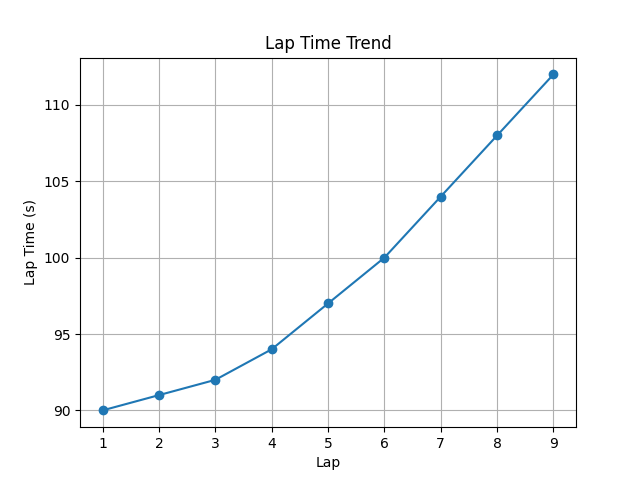
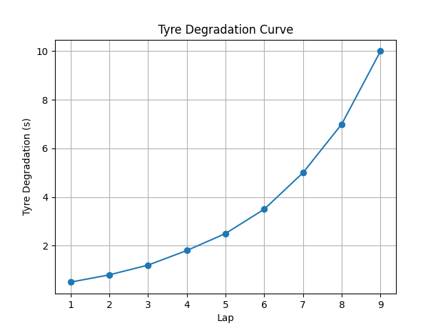

Action: DELAY PIT
Confidence: 50%
Stay loss: 6.85s vs Pit loss: 23.32s. Undercut gain: 0.80s.


Title: Formula 1 Race Analysis Report 1. Race Summary: - Current Average Lap Time: 98.67 seconds, indicating a steady pace with minimal variations. - Max Degradation at 10, suggesting significant tire wear and potential for reduced performance if not managed properly. 2. Key Performance Insight: - The trend in degradation is increasing, which could lead to compromised lap times and position loss in the latter stages of the race. Monitoring tire management strategies will be crucial. 3. Critical Moment Analysis: - The critical lap identified is the 7th. This could be due to an aggressive driving style or an unexpected track condition that caused increased degradation. Analyzing this lap in detail may provide insights for future strategy adjustments. 4. Strategy Evaluation: - Recommended Action: DELAY PIT STOP. Given the increasing trend in tire degradation, delaying the pit stop will allow more laps on fresh tires, potentially improving overall race performance. However, the confidence level is 0.5, indicating a moderate risk associated with this decision. 5. Final Recommendation: - With the current race conditions and strategy in place, it's advised to maintain focus on tire management while closely monitoring competitors' strategies. A flexible approach may be necessary to adapt to any unforeseen changes during the race.